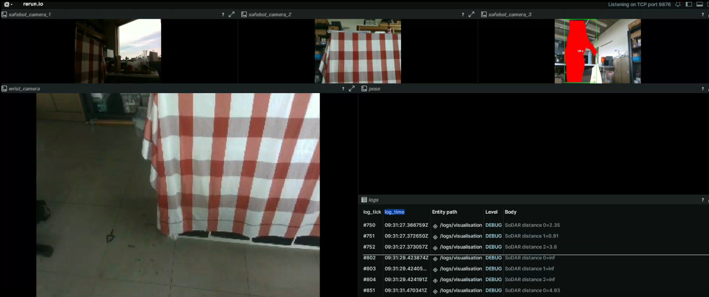

17 April 2025
In the world of robotics, the Robot Operating System (ROS) is both loved and hated. On one hand, its extensive ecosystem offers libraries for almost any task imaginable. On the other hand, installation can be a hassle, performance with default settings may be lacking, and for many projects, ROS can introduce unnecessary complexity when a single process would suffice.
At IDLab-AIRO, we've developed an alternative that strikes a balance between functionality and ease of use. This is airo-mono, our custom codebase designed to simplify robotics projects. This monorepo contains Python code for controlling UR cobots, KELO Robile platforms, processing camera data, algebraic operations, and more. Our approach has proven to be efficient and user-friendly, making it an excellent choice for both research and educational purposes. In fact, airo-mono powered the cloth unfolding competition at ICRA 2024 and is used in courses at Ghent University.
We recently published airo-mono to PyPI for the first time, making the installation process a breeze. Combined with uv, setting up new robotics projects is now incredibly straightforward. While our current hardware support is limited to what we have in our lab (such as UR cobots, Zed cameras, and Realsense cameras), the simplicity and speed of setup are hard to beat.
I recently set up a new project for an upcoming demo, and the process was impressively smooth. The demo runs on a mobile platform with a UR5e mounted on top, utilizing airo-ipc, our custom Inter-Process Communication framework. This framework reads data from seven sensors, including four RGBD cameras, at high frequencies and communicates them with low latency over shared memory.
Getting the demo up and running was as simple as:
uv sync to download and install dependencies (which was so fast, I initially thought it had failed)No need for any external tools besides Python and uv. Our multi-process demo was operational in just a few minutes, with most of the time spent downloading PyTorch wheels.
Here's a screenshot of an early test, showcasing rerun, a tool I highly recommend to anyone in the field:

There's never been a better time to try out airo-mono. Check it out on GitHub today and experience the difference for yourself!